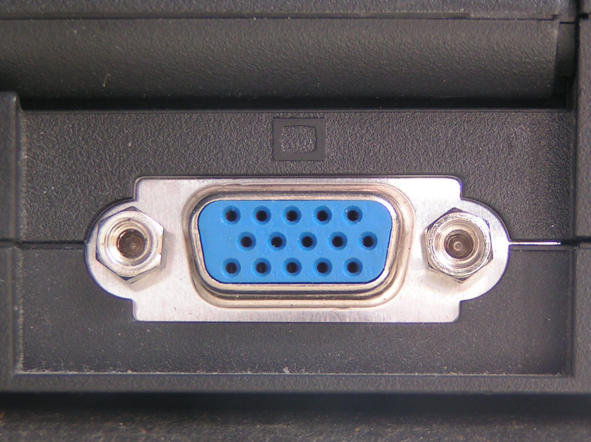

Ref : https://ko.wikipedia.org/wiki/D-sub
https://www.sony.co.kr/electronics/support/articles/S500081997
https://www.digikey.com/en/product-highlight/i/itt-cannon/micro-d-subminiature-mdm-series
https://www.peigenesis.com/images/content/pei_tabs/ittcannon/mdm/pdf-thumbs/mdm-series.pdf
D-sub(디 서브)는 D-subminiature(디 서브미니어처)의 준말로 특히 컴퓨터에 쓰이는 일종의 단자이다. 처음 도입되었을 때에는 "초소형"이라는 뜻의 "서브미니어처"라 불리는 것이 적절했지만 오늘날에는 널리 쓰이는 컴퓨터용 단자들 가운데 큰 편에 속한다.
D-Sub 커넥터의 모양은 사다리꼴의 상하 비대칭의 모양을 하고 있으며 다음과 같은 종류가 있습니다.

Cannon’s Micro-D Metal (MDM) series are available in 8 shell sizes and accommodate from 9 to 100 contacts, as well as special arrangements of power and coaxial contacts.